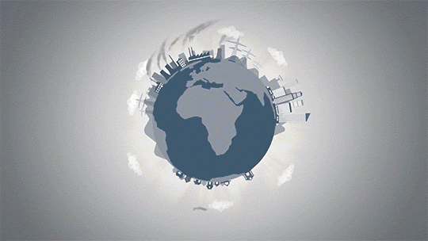
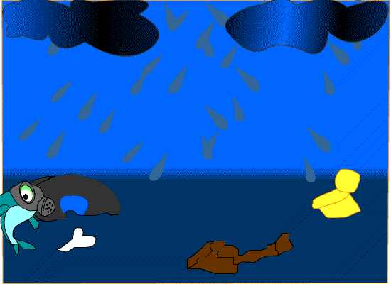

El medio ambiente es el espacio en el que se desarrolla la vida de los seres vivos . Permite la interacción de los mismos. Sin embargo este sistema no solo está conformado por seres vivos . Al igual también por elementos abióticos (sin vida) y por elementos artificiales. A medida que la población comenzó a crecer y aumentar su tecnología, el impacto sobre el medio ambiente comenzó a ser mayor y más nocivo. De esta manera el equilibrio del sistema ambiental se perdió. La calidad de vida de muchos seres vivos se encuentra desde ese momento en muy malas condiciones. Para algunos resulta incluso imposible adaptarse a los grandes cambios.
Las ventajas y desventajas que la tecnología a causado en el medio ambiente es gracias al desarrollo que el ser humano ha querido desempeñar. Para encontrar bienestar tanto económico, social y cultural. Sin medir el daño que este pueda causarle al entorno donde se desenvuelve. Las tecnologías limpias se caracterizan por ser innovadoras y enfocarse en la sostenibilidad de las actividades humanas, persiguiendo la preservación de los recursos naturales (energía y agua, entre otros) y optimizando su uso. Estas innovaciones buscan la reducción de la emisión de gases con efecto invernadero, principales causantes del calentamiento global. Por ello se puede decir que tienen un papel muy importante en la mitigación y la adaptación al cambio climático global. Las tecnologías limpias incluyen un amplio rango de tecnologías ambientales como energías renovables, eficiencia energética, almacenamiento de energía, nuevos materiales, entre otros.
| Ventajas | |
|---|---|
|
 |
| Desventajas | |
|---|---|
|
 |